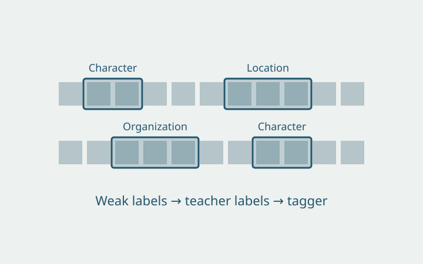
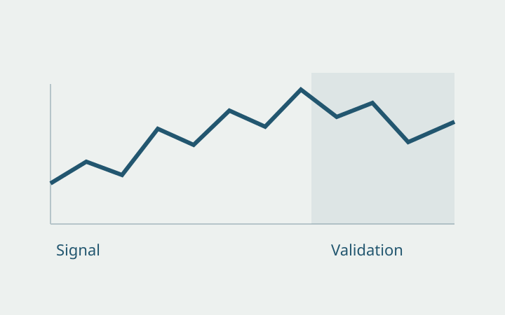
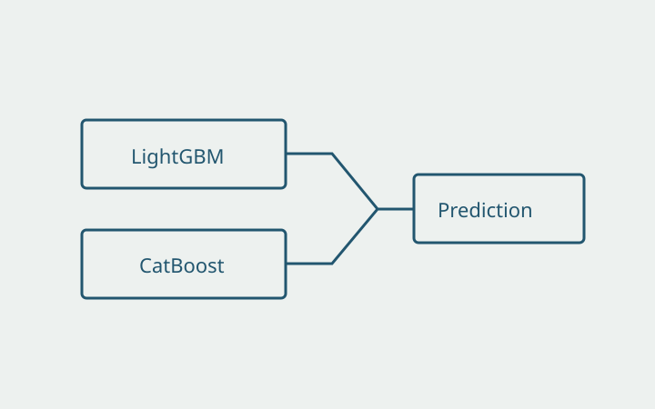
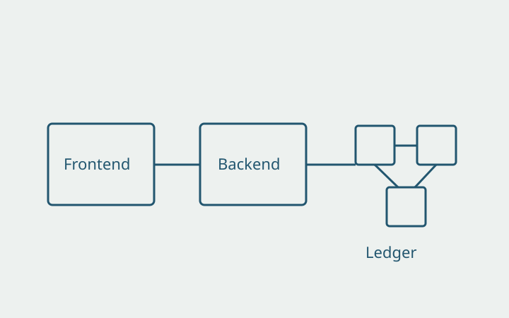
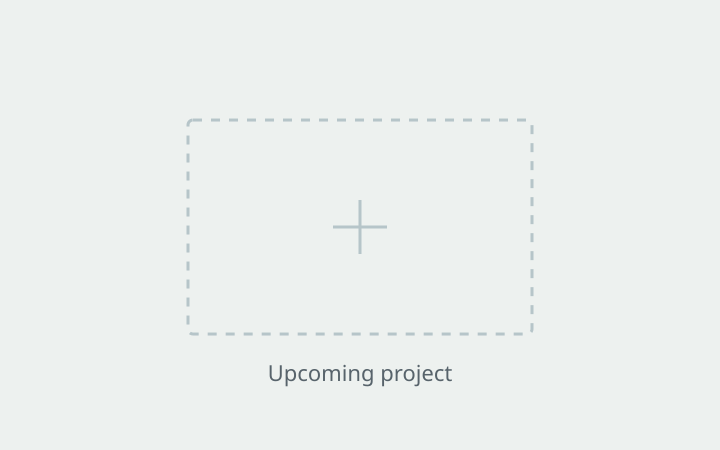

Named Entity Recognition in Chinese Fiction

A six-type NER study on a long Chinese web novel, training a RoBERTa tagger on weak labels and LLM teacher labels.Python · PyTorch · Chinese RoBERTa
Research & projects
Research and course projects in natural language processing, time-series prediction, machine learning, blockchain systems, and computer vision, with room for upcoming course work.

A six-type NER study on a long Chinese web novel, training a RoBERTa tagger on weak labels and LLM teacher labels.Python · PyTorch · Chinese RoBERTa

Minute-level prediction for BTC, ETH, BNB, XRP, and SOL, with chronological splits and cost-aware backtests.Python · LightGBM · Logistic Regression

Placement prediction on 1.5 million player records, with grouped validation and a LightGBM and CatBoost ensemble.Python · LightGBM · CatBoost

An evidence-recording workflow connecting smart contracts, a Django backend, and a WeChat Mini Program.FISCO BCOS · WeBASE · Django
MobileNetV3 and GCBlock experiments examining classification performance, robustness, and inference time.Python · PyTorch · MobileNetV3

A place for future DSC 106 work. A project summary and visualization will be added after the assignment is complete.Upcoming coursework
A place for future DSC 106 work. A project summary and visualization will be added after the assignment is complete.Upcoming coursework
A place for future DSC 106 work. A project summary and visualization will be added after the assignment is complete.Upcoming coursework
A place for future DSC 106 work. A project summary and visualization will be added after the assignment is complete.Upcoming coursework
A place for future DSC 106 work. A project summary and visualization will be added after the assignment is complete.Upcoming coursework
A place for future DSC 106 work. A project summary and visualization will be added after the assignment is complete.Upcoming coursework
A place for future DSC 106 work. A project summary and visualization will be added after the assignment is complete.Upcoming coursework
01 / NLP research
Independent research
Python, PyTorch, Chinese RoBERTa
A six-type named entity recognition study on a long Chinese web novel with many author-invented names.
02 / Time-series research
Python, LightGBM, Logistic Regression
Minute-level prediction for five crypto assets, evaluated with chronological splits and trading-cost-aware backtests.
03 / Predictive modeling
Two-person course project
Python, LightGBM, CatBoost
Predicting final match placement from player-, team-, and match-level features with gradient-boosted models.
04 / Systems integration
Reproduction lead · Team project
FISCO BCOS, WeBASE, Django, WeChat Mini Program
Reproducing an end-to-end evidence-recording workflow across smart contracts, a Django backend, and a WeChat Mini Program.
05 / Computer vision
Independent research
Python, PyTorch, MobileNetV3, GCBlock
Improving MobileNetV3-based deepfake detection while examining classification performance and robustness to adversarial inputs.